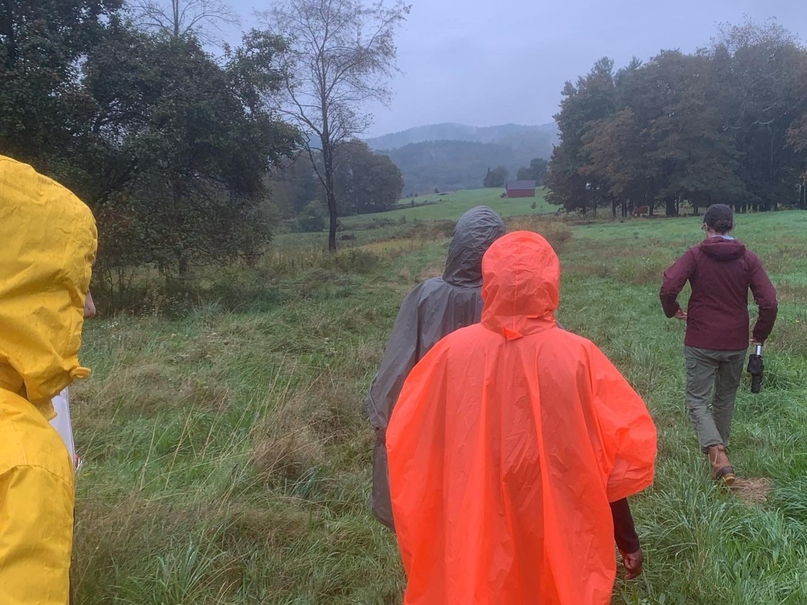
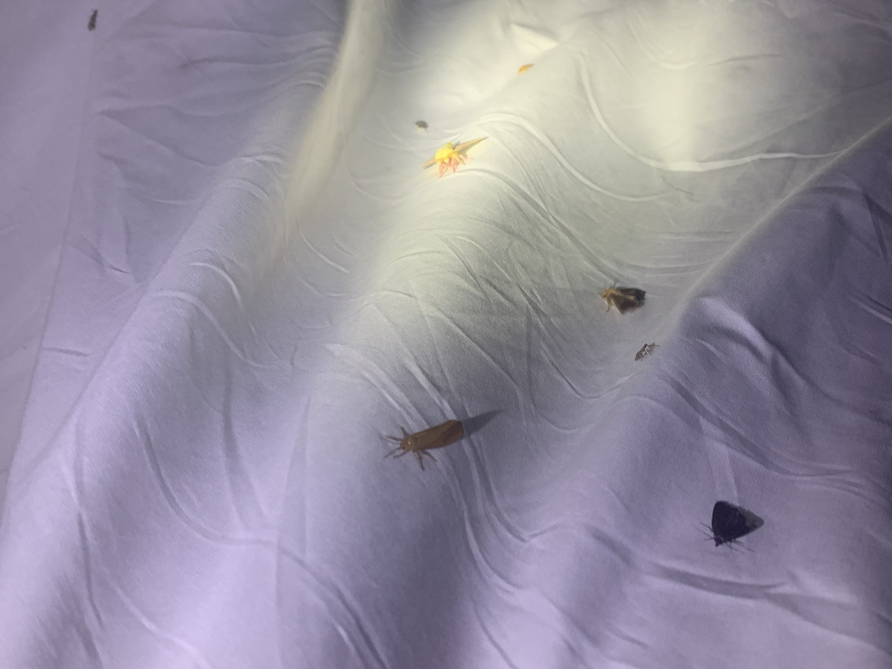
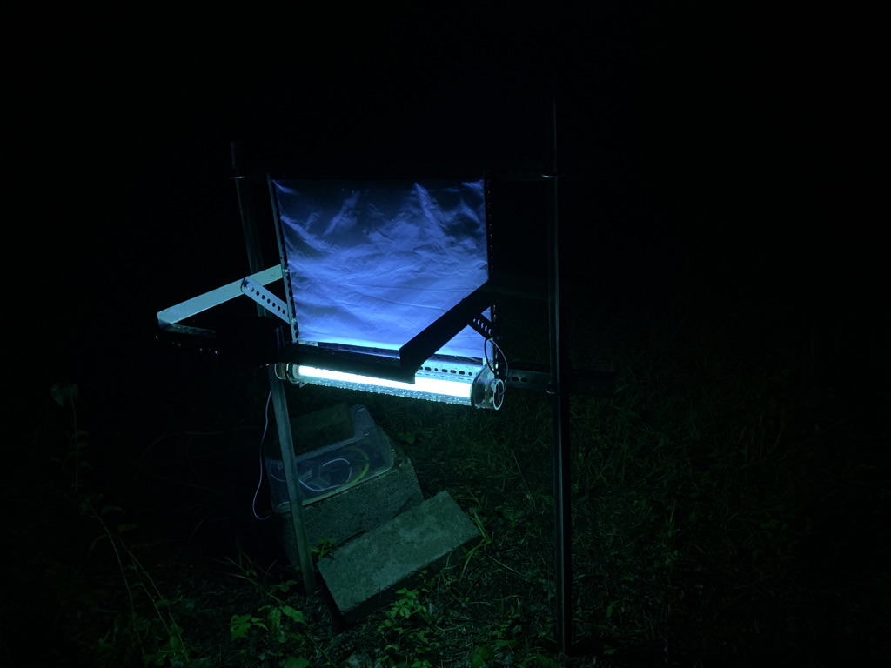
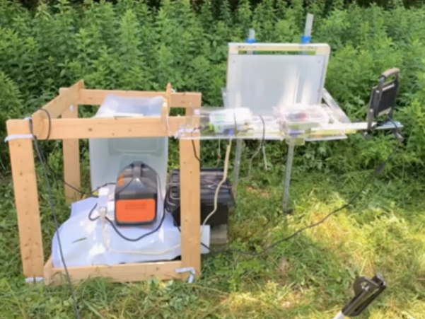
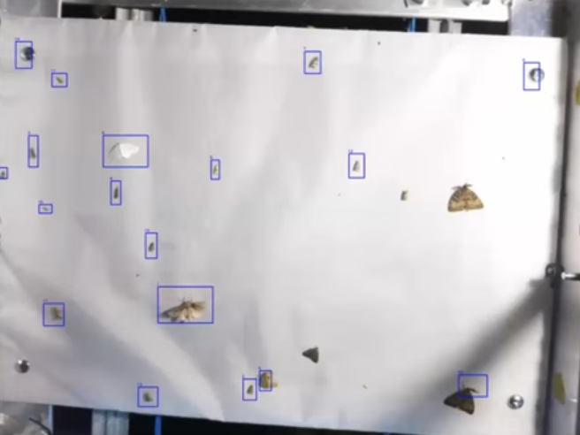

Processus





Mon travail sur le Mothitor s’est déroulé sur plusieurs mois et trois itérations. J’ai passé du temps sur le terrain à pratiquer des méthodes traditionnelles d’observation des papillons de nuit et à tester les versions précédentes du Mothitor afin de bien comprendre les points à améliorer. J’ai ensuite planifié et réalisé des conceptions en collaboration avec des biologistes, des écologues, des ingénieurs, des spécialistes des données et d’autres informaticiens.